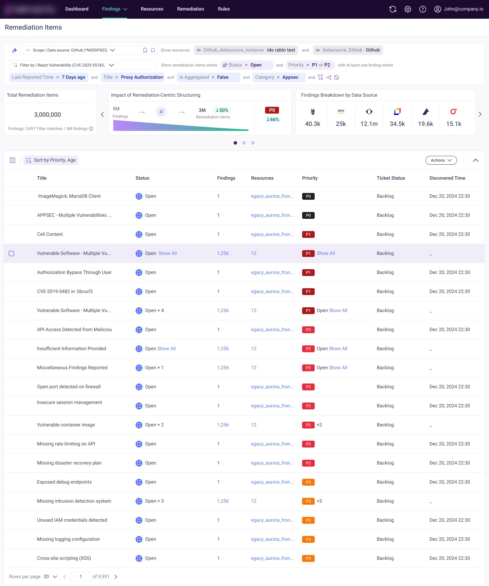
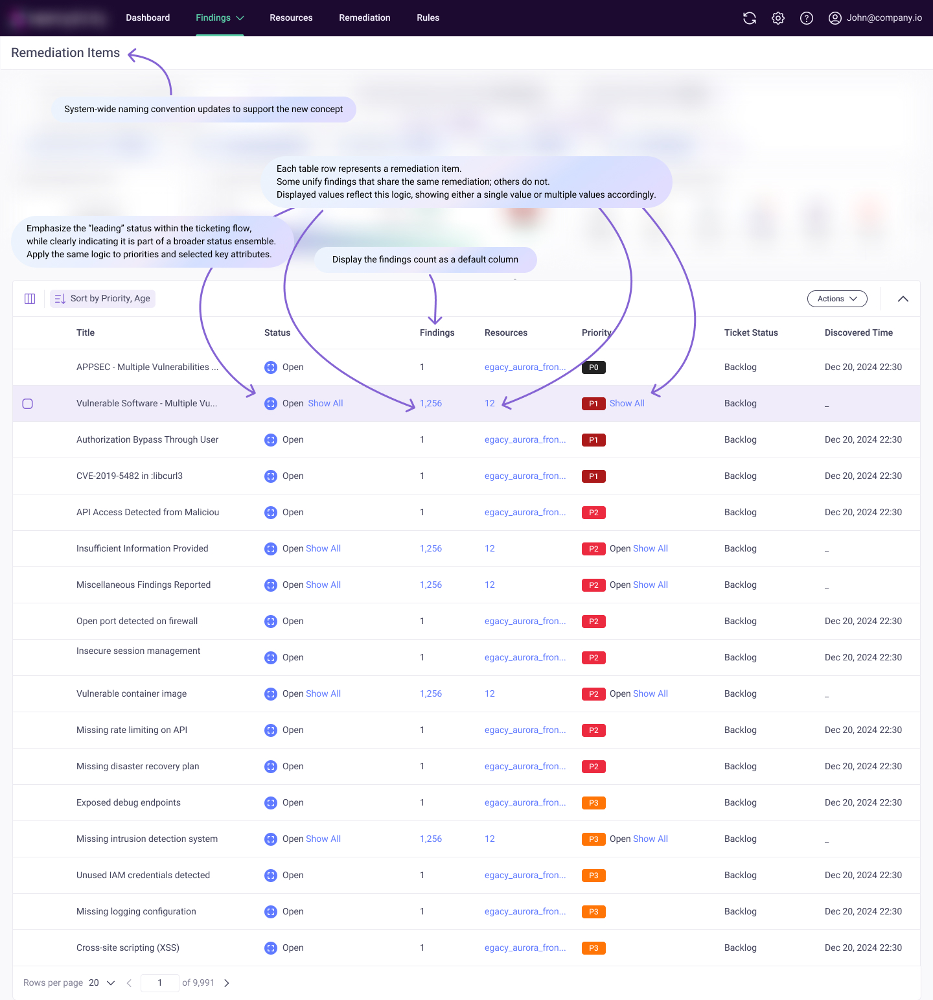
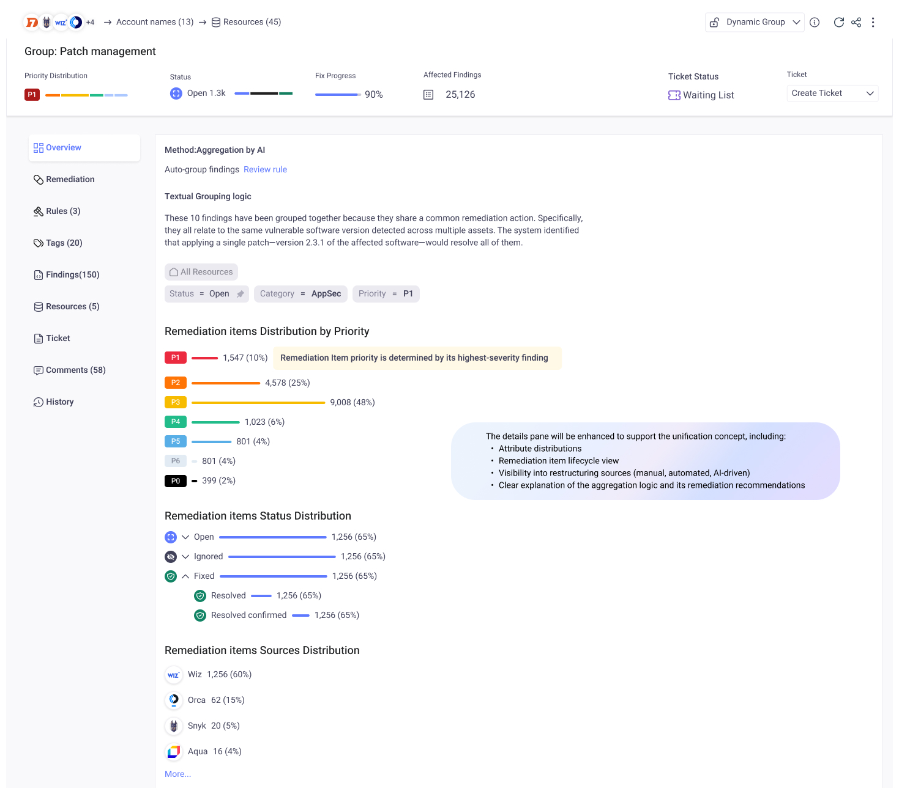
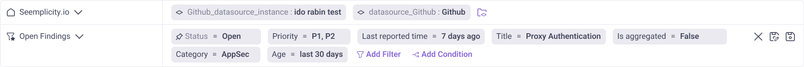
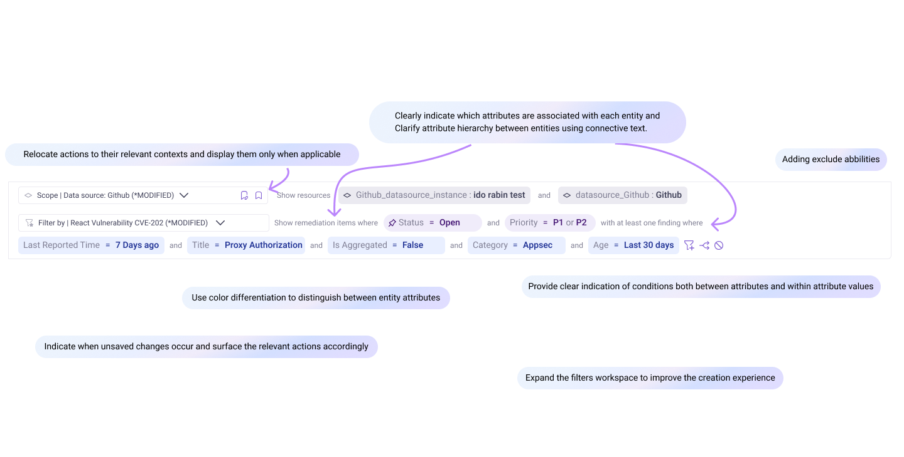
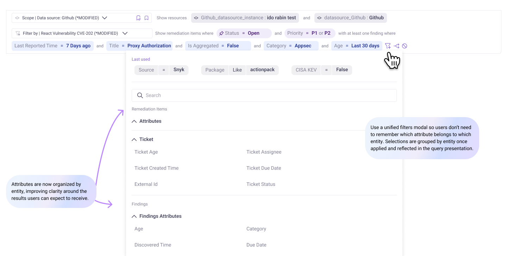
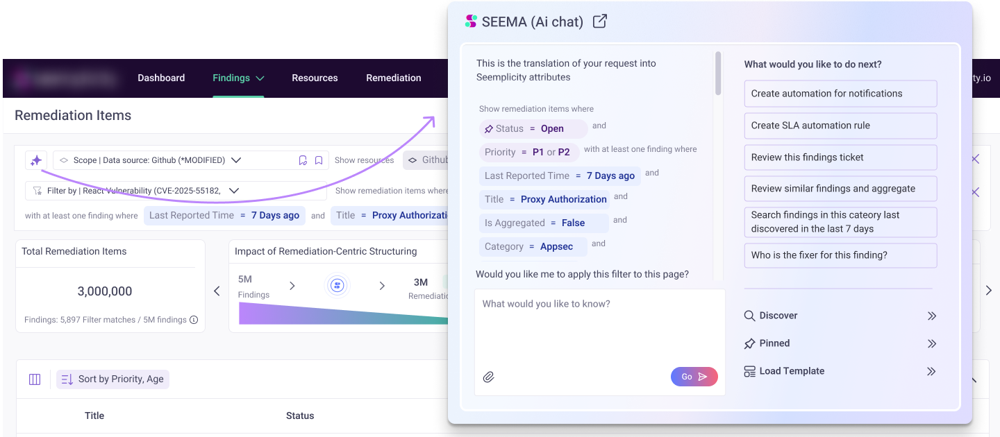
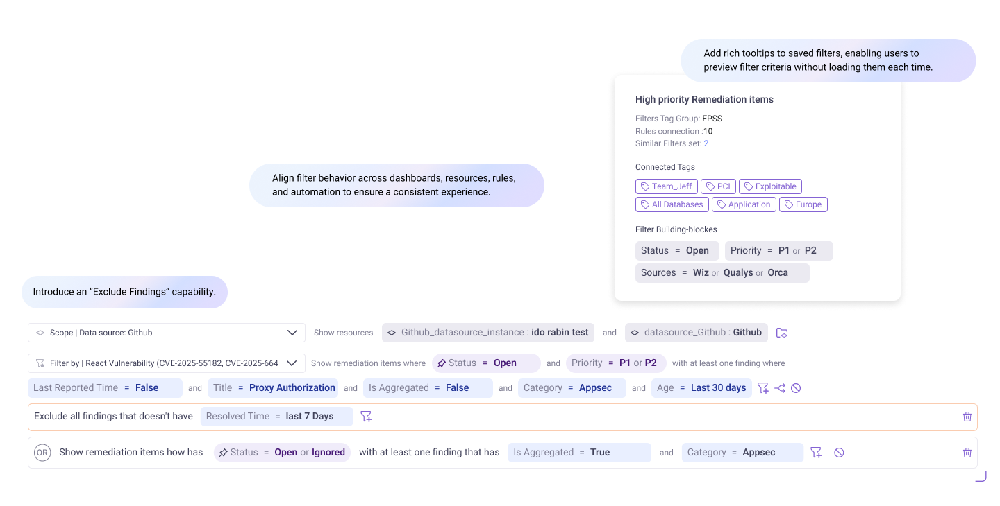
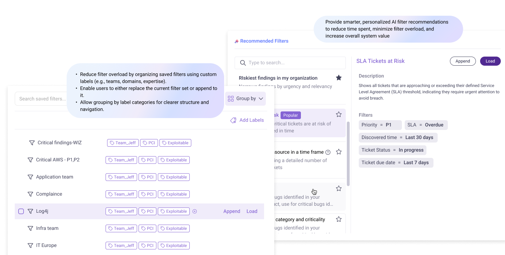

Filters Makeover
Added greater flexibility for handling more question types. Introduced enterprise-level filter organization for large-scale data.
What are we trying to fix?
- Currently, aggregated findings rely on representative attributes that do not accurately reflect all underlying members.
- As a result, users often apply filters and receive irrelevant results, or struggle to understand why certain findings are missing.
- These unclear logic, inconsistencies, lead to user confusion and loss of trust.
What is the solution?
- Transition the Findings page to a Remediation Items page.
- Revise and standardize the filters calculation logic.
- Clearly communicate the updated logic while simplifying complexity.
- Enhance filtering capabilities to improve accuracy and organizational control.
lets drill down to each aspect...
Findings page to Remediation items page
Creating a new entity called "Remediation Item" — the next evolution of third-party findings.
- It may represent a single finding or a grouped set that shares a common remediation.
- The entity is enriched with internally generated data and AI Enrichment data providing stronger context and deeper insights beyond the original integration inputs.


Want to see a live Figma prototype?
Explore the interactive prototype →
Revise the filters calculation logic
Calculate values based on the underlying findings that compose each remediation item, rather than relying on representative attributes.
Retain a limited set of calculated fields only where a single unified value is required for specific use cases (e.g., ticketing attributes that apply consistently across all grouped findings, as illustrated in the following slides).
Clearly communicate the updated logic while simplifying complexity



What about AI? ✦

Anything else?

